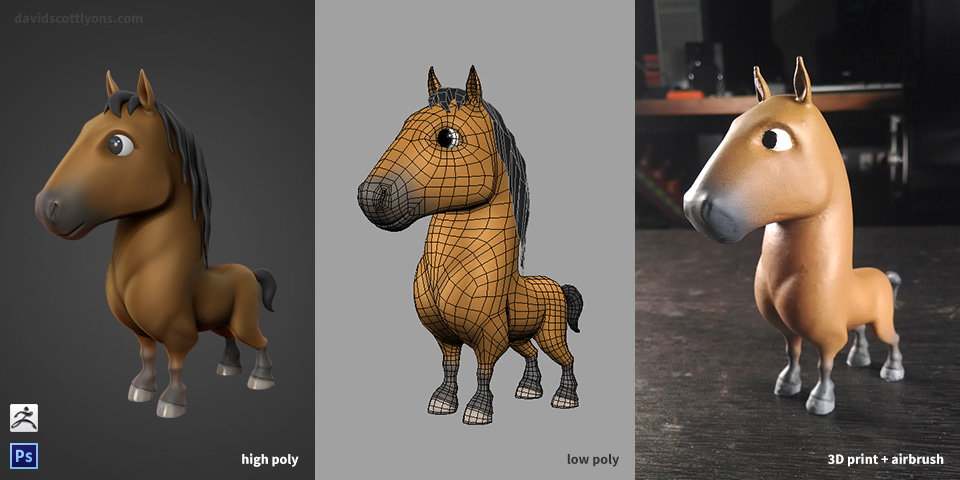
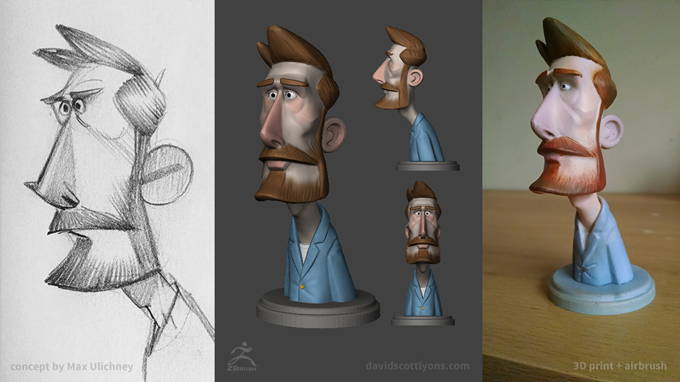
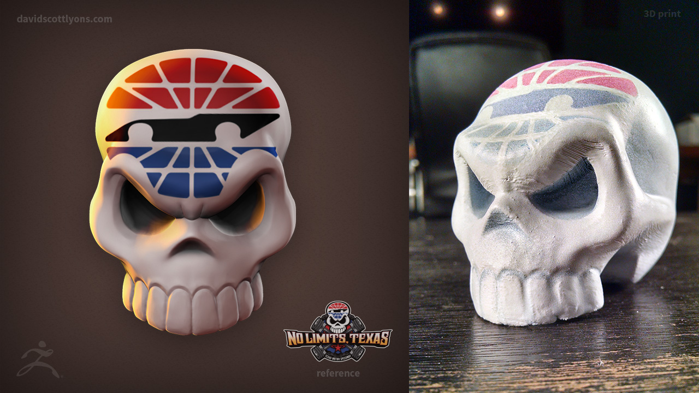

In 2015, I started learning how to do 3D printing with a few of my own 3D models. I do 3D print prep work in ZBrush: combine all the separate parts into one airtight mesh with Dynamesh, and decimation to lower the poly count and decrease the file size again while keeping the smooth high resolution. Because I haven't found a good full-color 3D printer yet, I like to airbrush my 3D prints.
In March 2018, I wanted to test out 3dhubs.com, a 3D printing service, to see how it would compare to other services, using a makerspace, or owning and operating a 3D printer myself. So I decided do a test print of the rhino I made for the Animal Chat web app. In June 2018, I brushed on a coat of epoxy, airbrushed primer, airbrushed a color gradient, and added some details with a small paint brush.
In 2015, I sculpted all of these in ZBrush, printed them at the Dallas Makerspace with an FDM PolyPrinter, then coated them with epoxy and airbrush primer, and painted with airbrush colors and a paint brush.
My original horse model was my first 3D print in February 2015.
Sculpt and print of a concept sketch by Max Ulichney in July 2015.
While I was working at Slingshot in Dallas, one of our clients was Texas Motor Speedway. I made a 3D version of their logo in ZBrush and 3D printed it.
{kind=link}
{kind=link}
{kind=link}
{kind=link}